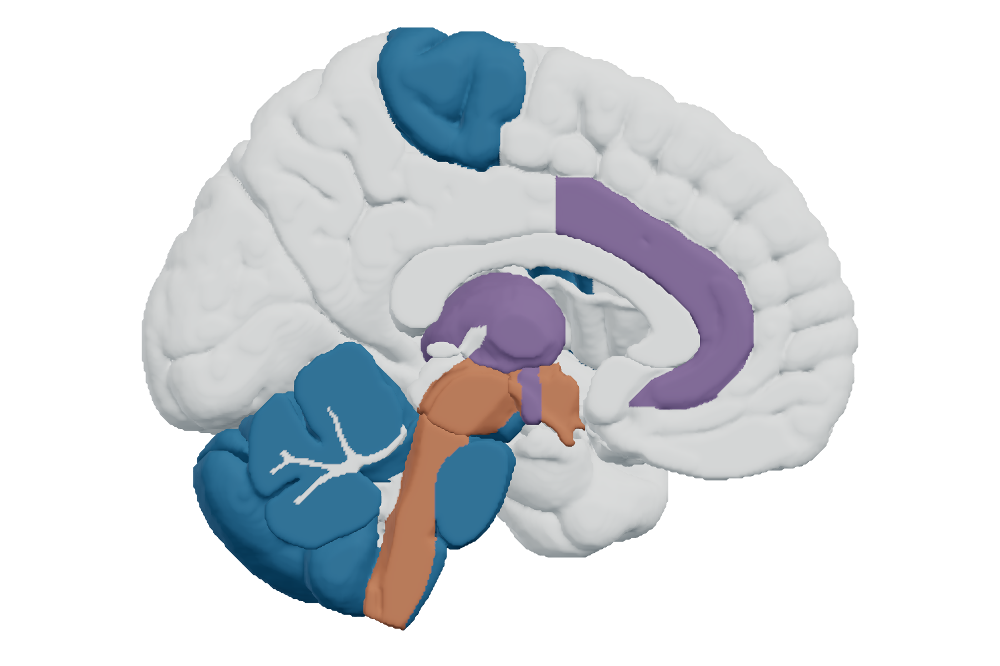

Backslash of the Brain
Where does the signal from a stretching muscle meet the signal from a filling organ? Start inside the left hemisphere, then follow a pathway down to the cord and back.

Loading the rotatable brain…Myoception is the programme’s name for sensing muscle-driven movement, including the feedback that comes with it. Visceroception is sensing conditions inside an organ, such as stretch in the bladder.
Follow the macaque arm recording to see how marker motion and sensory-cortex spikes changed around a robot push and a later reach.
Open the muscle spindle recording to compare a single rat sensory axon with measured tendon force during stretch.
Choose a circuit to see which structures receive a signal, where the signal changes direction, and what responds. Each stop opens a corresponding anatomical view.
The diagonal guides the eye. The nerves, relays and organ surfaces come from different preparations. Circuit steps explain connections; the viewer shows no measured neural activity.
What the colours and views mean
The original brain colours distinguish somatic, autonomic and shared roles. The darker highlight marks an atlas parcel you selected. These are explanatory colours. The functional edge of primary motor or sensory cortex cannot be read from a gross fold alone.
The three-dimensional brain retains the left half of the Allen Human Reference Atlas. The fine brainstem sections come from the right side of a different donor. The cord and organs occupy the Human Reference Atlas female reference frame. Change view to move between preparations. The viewer does not align them to each other.